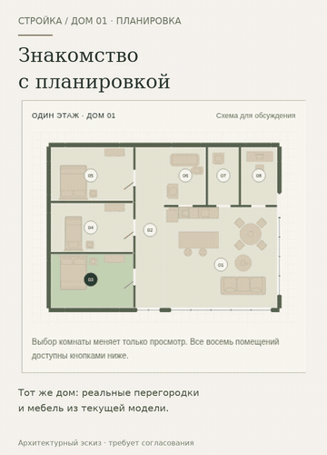

Найдём место для каждого.
Лёгкий план того же дома. Восемь помещений, пояснения и переход в выбранную комнату 3D. Пожелания семьи сопоставляются с эскизом: что уже есть и что нужно обсудить.
Анимированная GIF-версия · План крупно · На телефоне
Если видео не открывается — показать GIF

Открыть интерактивный прототип →
Предыдущий этап: подготовка разговора →
Монтаж настоящих кадров прототипа 25 на вымышленном примере, не непрерывная запись и не FPS устройства. План и конструкции требуют согласования. Назначение комнат и перепланировка не автоматические. Физический iPhone/Safari не проверен. Публичный интерактивный адрес пока не подключён; raw HTML не является размещённым сайтом. Рабочий сайт и сервер не менялись.